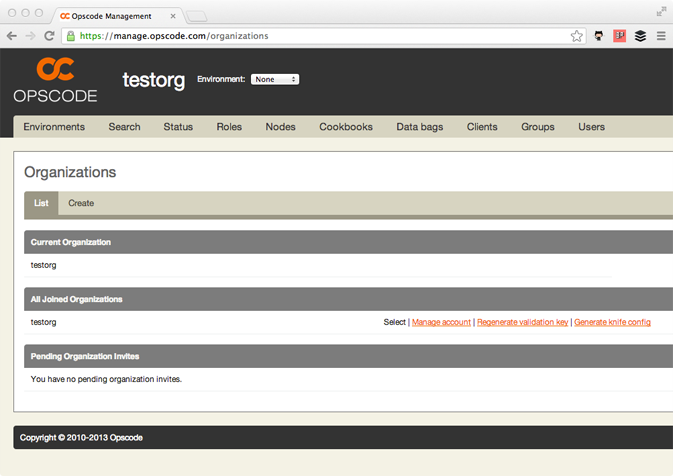
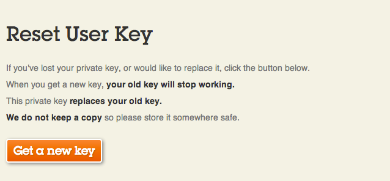

Getting Started with Chef
<< Chapter 1: Introducing Chef
2. Introducing Chef Server
This chapter will extend on the building blocks of the previous chapter and introduce better ways of working than just SSH and using Chef in a client and server model.
Chef client and server
As well as using Chef on a single box with chef-solo it is also possible to use Chef in a client/server model. The Chef server stores and distributes our cookbooks and other Chef configuration when contacted by a client running the chef-client command. The chef-client command is the client/server version of chef-solo.
Storing the configuration inside a Chef Server instead of inside a file like web.json as we did in the previous chapter allows us to easily manage the configuration of our servers from our workstation instead. This has an obvious advantage when dealing with a large number of servers and allows us to easily provision new servers with knife.
Node
At this point it's prudent to introduce you to some Chef terminology. A computer, virtual machine or cloud instance you are running chef-solo or chef-client on is called a node. This differs slightly from what Chef calls a client. A client can also be your workstation that you don't run chef-client on but do use knife to manage your Chef server with.
Workstation setup
We will now setup your workstation so you can edit you Chef recipes in your favourite text editor.
Install curl if it is not already installed. Then install Chef.
Install Chef
$ curl -L https://www.opscode.com/chef/install.sh | sudo bash
Thank you for installing Chef!
Save some typing by adding the various Chef commands to your $PATH.
$ echo 'export PATH="/opt/chef/embedded/bin:$PATH"' >> ~/.bash_profile && source ~/.bash_profile
Hosted Chef
Opscode, the makers of Chef, provide a service called Hosted Chef which is a Chef Server as a service. They offer a free tier which is good for 5 nodes so is ideal to help us get started.
Follow the instructions to sign up on the website and log in.
Now we've signed up we will download some files that will allow us to use our Hosted Chef account with knife. Visit https://manage.opscode.com/organizations.

Click the Generate knife config link. Download the knife.rb file that is generated.
Then click the Regenerate validation key link. Press OK to the alert and download the .pem file.
Now visit https://www.opscode.com/account/password.

Press the Get a new key button and download the .pem file.
Using Hosted Chef
We'll now use Hosted Chef along with the chef repository we made in the previous chapter. Firstly, let's download our chef repository.
$ wget http://gettingstartedwithchef.com/downloads/cp1.tgz --2013-06-09 13:36:15-- http://gettingstartedwithchef.com/downloads/cp1.tgz Resolving gettingstartedwithchef.com (gettingstartedwithchef.com)... 80.68.93.116 Connecting to gettingstartedwithchef.com (gettingstartedwithchef.com)|80.68.93.116|:80... connected. HTTP request sent, awaiting response... 200 OK Length: 300046 (293K) [text/plain] Saving to: ‘cp1.tgz’ 100%[===============================================================================>] 300,046 1.78MB/s in 0.2s 2013-06-09 13:36:15 (1.78 MB/s) - ‘cp1.tgz’ saved [300046/300046] $ tar zxf cp1.tgz $ cd chef-repo
We now have everything we need, so let's start using Hosted Chef. Firstly, we need to tell knife to use Hosted Chef. To do this we need copy the files we just downloaded from Hosted Chef to our repository.
$ mv ~/Downloads/*.pem .chef/ $ mv ~/Downloads/knife.rb .chef/
Let's check that knife can talk to Hosted Chef.
$ knife client list org_name-validator
"org_name" will be whatever you entered as your organisation name when signing up for Hosted Chef.
Uploading Cookbooks
Before we can configure our node with chef-client, we need to upload our cookbooks to the Chef server. We do that with knife.
$ knife cookbook upload --all
Uploading apache2 [1.6.0]
Uploading apt [1.9.0]
Uploading aws [0.100.6]
Uploading build-essential [1.3.4]
Uploading database [1.3.12]
Uploading mysql [2.1.2]
Uploading openssl [1.0.2]
Uploading php [1.1.8]
Uploading phpapp [0.1.0]
Uploading postgresql [2.2.2]
Uploading xfs [1.1.0]
Uploading xml [1.1.2]
Uploaded all cookbooks.
Roles
We used a single JSON file to configure our node with chef-solo but we if we have multiple nodes we should probably find a better solution to this. A Chef role allows us to group configuration for types of nodes together. We'll expand on this in a later chapter but for now we'll create a role for our Wordpress setup.
$ knife role create phpapp
You may receive the following error if you do not have an EDITOR environment variable set.
ERROR: RuntimeError: Please set EDITOR environment variable
You can resolve this quickly with the --editor option. e.g. --editor vi or --editor nano etc.
We are then presented with the basic structure of the role as a JSON file.
{
"name": "phpapp",
"description": "",
"json_class": "Chef::Role",
"default_attributes": {
},
"override_attributes": {
},
"chef_type": "role",
"run_list": [
],
"env_run_lists": {
}
}
We'll go through what the fields actually mean. The name you can probably guess - the name of the role. It's a good idea to put something descriptive in the description field. You may remember that we discussed attributes in the last chapter, default_attributes allows us to set attributes and override_attributes let's us specify attributes that override attributes defined as defaults elsewhere. We've already created a run_list in our JSON file in the last chapter so let's add that first. It's safe to ignore the fields that have not been mentioned for now.
{
"name": "phpapp",
"description": "",
"json_class": "Chef::Role",
"default_attributes": {
},
"override_attributes": {
},
"chef_type": "role",
"run_list": [
"recipe[apt]", "recipe[phpapp]"
],
"env_run_lists": {
}
}
Enter our run list, highlighted in green. We should now specify some attributes. We don't need to specify the attributes for the mysql cookbook as it creates secure random passwords automatically in chef-client mode. Our phpapp cookbook requires us to specify a password attribute so let's add that to default_attributes.
{
"name": "phpapp",
"description": "",
"json_class": "Chef::Role",
"default_attributes": {
"phpapp": {"db_password": "212b09752d173876a84d374333ae1ffe"}
},
"override_attributes": {
},
"chef_type": "role",
"run_list": [
"recipe[apt]", "recipe[phpapp]"
],
"env_run_lists": {
}
}
Add the code in green above. Save the file. The role will be uploaded to Hosted Chef and knife will display the following message.
Created role[phpapp]
Let's confirm the role is on the server.
$ knife role list
phpapp
Finally, we should download the role from the server and place it into our roles directory for safe keeping.
$ knife role show phpapp -d -Fjson > roles/phpapp.json
Having the file in our chef repository allows us to edit the role at our leisure and check it into version control systems such as Git, something we'll get to in a later chapter. We can upload the file to server again using the following command.
$ knife role from file roles/phpapp.json
Updated Role phpapp!
We're now ready to bootstrap our new node with knife.
Bootstrapping a node with Knife
Create a new Ubuntu instance in the Rackspace Cloud or use your virtual machine software to create a new Ubuntu box.
If you are using a new Rackspace Cloud instance replace "password" with the root password and "hostname" with it's hostname or IP address and run the following command.
$ knife bootstrap --run-list "role[phpapp]" --json-attributes "{\"phpapp\": {\"server_name\": \"intro.hellofutu.re\"}}" --ssh-user root --ssh-password password hostname
Otherwise the knife bootstrap command you need will be specific to your setup. To use a ssh key and sudo before executing the bootstrap you might use the following command, replacing <hostname> with the hostname or IP address of the machine you intend to bootstrap.
$ knife bootstrap --run-list "role[phpapp]" --json-attributes "{\"phpapp\": {\"server_name\": \"intro.hellofutu.re\"}}" --sudo hostname
You'll see some output along these lines.
Bootstrapping Chef on intro.hellofutu.re .. intro.hellofutu.re intro.hellofutu.re Chef Client finished, 61 resources updated intro.hellofutu.re
And if you visit your new node in your web browser you'll see the following.

That's fairly impressive I'm sure you'll agree! But it gets better. We can use knife to create the cloud instances for us as well!
Creating cloud instances with Knife
Knife plugins extend Knife's functionality and make knife even more useful! One example is that they allow us to provision cloud instances before they are bootstrapped. This is useful for automation and quick horizontal scaling.
Installing Knife plugins is unfortunately a bit more involved than what we've previously done, so please select the appropriate tab below for your workstation below.
$ sudo apt-get install ruby1.9.1-dev
Rackspace Cloud
We'll start with creating Rackspace Cloud. First we need to install the knife-openstack plugin.
$ sudo gem install knife-openstack